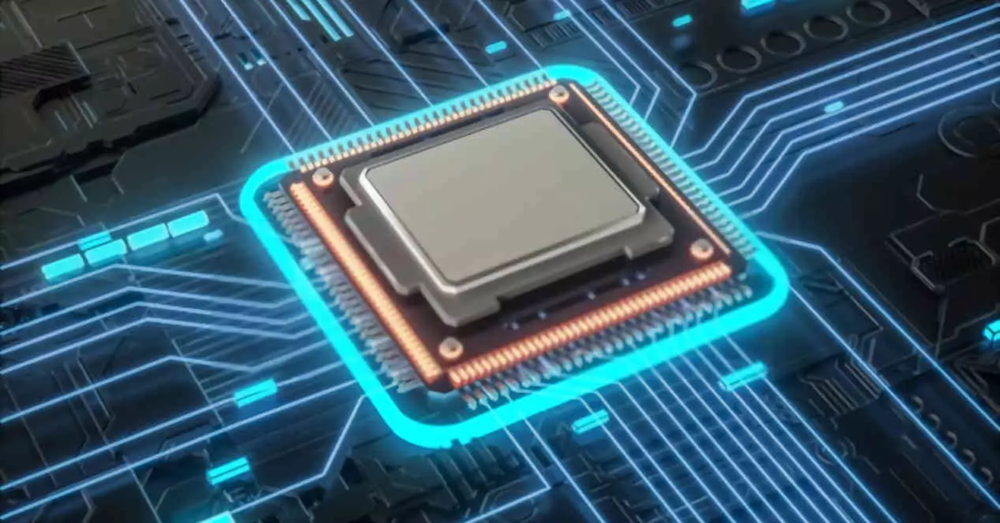

¿Qué es una computadora?
Una computadora es un dispositivo electrónico que procesa datos y realiza tareas específicas según las instrucciones de un programa. Es una herramienta esencial en la vida moderna, utilizada en educación, trabajo, entretenimiento y más.
Las computadoras se dividen en varias categorías, como computadoras de escritorio, portátiles, servidores y supercomputadoras.
Memorias RAM

La memoria RAM (Random Access Memory) es un componente crucial en cualquier computadora. Es donde se almacenan temporalmente los datos que el procesador necesita para realizar tareas rápidamente.
- Tipos de RAM: DDR3, DDR4, DDR5.
- Capacidad: Varía desde 4 GB hasta 128 GB o más en sistemas avanzados.
- Velocidad: Medida en MHz, afecta el rendimiento general del sistema.
Procesadores
El procesador, también conocido como CPU (Unidad Central de Procesamiento), es el cerebro de la computadora. Ejecuta instrucciones y realiza cálculos necesarios para que el sistema funcione.
Algunos de los fabricantes más conocidos de procesadores son Intel y AMD. Los procesadores modernos tienen múltiples núcleos, lo que permite realizar varias tareas simultáneamente.
- Características clave: Velocidad de reloj (GHz), número de núcleos, y caché.
- Ejemplos: Intel Core i9, AMD Ryzen 9.
Tipos de procesadores
| Año | Procesador | Bits | Transistores | Frecuencia | Notas |
|---|---|---|---|---|---|
| 1971 | Intel 4004 | 4 | 2,300 | 740 kHz | Primer microprocesador comercial. |
| 1972 | Intel 8008 | 8 | 3,500 | 500 kHz | Primer procesador de 8 bits. |
| 1974 | Intel 8080 | 8 | 6,000 | 2 MHz | Usado en las primeras computadoras personales. |
| 1978 | Intel 8086 | 16 | 29,000 | 5-10 MHz | Inicio de la arquitectura x86. |
| 1982 | Intel 80286 | 16 | 134,000 | 6-25 MHz | Introducción del modo protegido. |
| 1985 | Intel 80386 | 32 | 275,000 | 12-40 MHz | Primer procesador de 32 bits de Intel. |
| 1989 | Intel 80486 | 32 | 1,200,000 | 20-100 MHz | Integración de la unidad de coma flotante. |
| 1993 | Intel Pentium | 32/64 | 3,100,000 | 60-300 MHz | Arquitectura superscalar. |
| 1999 | AMD Athlon | 32/64 | 22,000,000 | 500 MHz - 1 GHz | Competencia directa con Intel Pentium III. |
| 2006 | Intel Core 2 Duo | 64 | 291,000,000 | 1.86-3.33 GHz | Introducción de múltiples núcleos. |
| 2010 | Intel Core i7 | 64 | 731,000,000 | 2.66-3.33 GHz | Arquitectura Nehalem con Hyper-Threading. |
| 2017 | AMD Ryzen | 64 | 4,800,000,000 | 3.0-4.0 GHz | Arquitectura Zen, revitalización de AMD. |
| 2021 | Apple M1 | 64 | 16,000,000,000 | 3.2 GHz | Primer procesador ARM de Apple para Macs. |
| 2023 | Intel Core i9-13900K | 64 | 16,000,000,000 | 3.0-5.8 GHz | Arquitectura híbrida de rendimiento. |